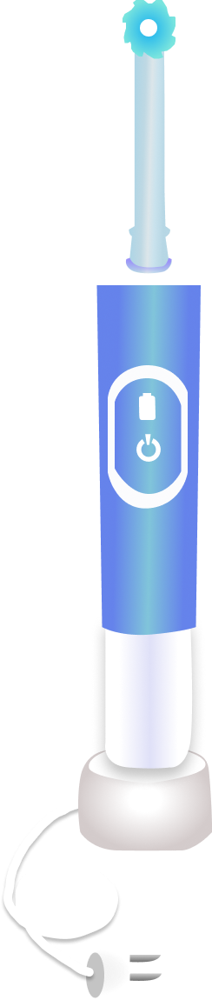

Wat is Progressive Enhancement?
Progressive enhancement is een methode die de focus legt
op de content van de webpagina eerst. De content van de pagina (tekst, foto’s, etc)
word gescheiden van semantiek van webdesign (HTML etc.) Het doel is om te zorgen dat het web voor iedereen bruikbaar blijft. In de kern moet iedereen de meest belangrijke
content op een pagina kunnen zien, dus ook als je de content op een oude computer bekijkt of slecht internet hebt. Mensen met de nieuwste computers en het beste internet
kunnen dus een website zien die er misschien mooier uitziet maar dezelfde content laat zien. Progressive enhancement gaat over nadenken wat de gebruiker minimaal nodig heeft
om de content te bekijken en de verbeterde versie te laten zien als de browser dit toelaat.
Met Feature detection word vaak gekeken of de browser de moderne functionaliteit kan hendelen, door de site te testen en te zien of de browser alle content oke laat zien.
States

Gehele tandenborstel met oplader en stroom
Bij deze state werkt de tandenborstel optimaal. De gebruiker kan optimaal gebruik maken van alle functionaliteiten zonder daarbij problemen tegen te komen. Dit zou hetzelfde zijn als het runnen van een website op een gloed nieuwe browser waarbij alle content juist wordt gegenereerd.
Gehele borstel zonder oplader met stroom
Bij de gehele tandenborstel met weinig stroom is er sprake van HTML, CSS en Javascript. De gebruiker kan alle functionaliteiten op een prettige manier gebruiken alleen is er spraken van verminderde prestaties, de borstel draait namelijk minder hard. Denk hierbij aan het hebben van traag internet.
Gehele tandenborstel met oplader en stroom
Als de gehele tandenborstel ter beschikking is maar er is geen stroom, dan is er sprake van alleen html en CSS. De gebruiker kan nog steeds de functionaliteit tanden poetsen uitvoeren en het is door CSS (het handvat) prettiger om te gebruiken.
Alleen de borstel
Bij de borstel is er alleen sprake van html, de content is nog steeds zichtbaar en tot een zekere hoogte ook bruikbaar. De gebruiker kan nog steeds alleen met de borstel zijn tandenpoetsen.